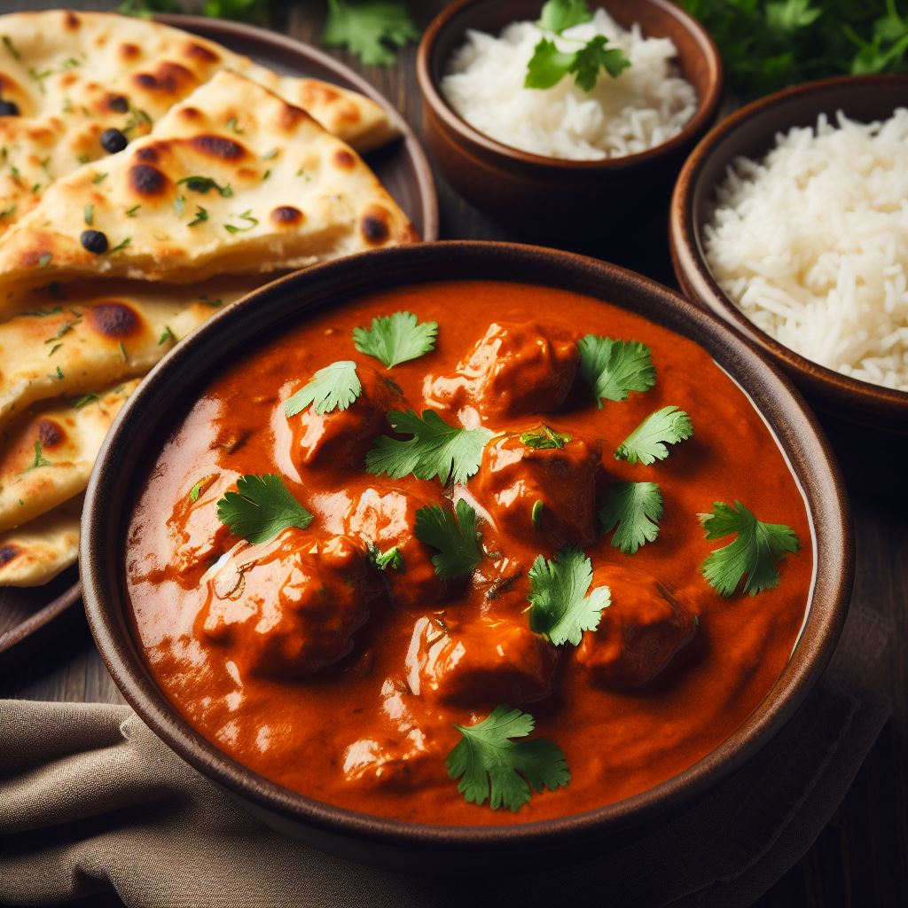

Creamy and Flavorful Butter Chicken

There's something truly special about the rich, velvety goodness of Butter Chicken. This classic North Indian dish is a symphony of aromatic spices, succulent chicken, and a luscious tomato-based sauce. It's a crowd-pleaser that never fails to satisfy the taste buds. Join me on a culinary journey as we dive into the world of this beloved Indian comfort food.
For the Marinade:
- 500g boneless chicken, cut into bite-sized pieces
- 1 cup plain yogurt
- 1 tablespoon ginger paste
- 1 tablespoon garlic paste
- 1 teaspoon red chili powder
- 1 teaspoon turmeric powder
- Salt to taste
For the Suace
- 4 tablespoons unsalted butter
- 4 tomatoes, pureed
- 1 tablespoon ginger paste
- 1 tablespoon garlic paste
- 1 teaspoon cumin powder
- 1 teaspoon coriander powder
- 1 teaspoon garam masala
- 1 teaspoon paprika (optional, for extra color)
- 1 cup heavy cream
- Fresh cilantro leaves, for garnish
- Salt to taste
Instructions:
- Marinate the Chicken:
- In a large mixing bowl, combine yogurt, ginger paste, garlic paste, red chili powder, turmeric powder, and salt.
- Add the chicken pieces to the marinade, ensuring they are well-coated. Cover and refrigerate for at least 2 hours, or preferably overnight for maximum flavor.
- Cook the Chicken:
- Preheat your oven to 375°F (190°C).
- Place the marinated chicken on a baking tray lined with parchment paper. Bake for 20-25 minutes or until the chicken is cooked through and slightly charred. Set aside.
- Prepare the sauce
- In a large skillet or saucepan, melt the butter over medium heat.
- Add chopped onions and sauté until golden brown.
- Stir in ginger and garlic paste, cooking for an additional 2 minutes until fragrant.
- Add the Spices:
- Add cumin powder, coriander powder, and paprika (if using). Cook for another 2 minutes, allowing the spices to bloom.
- Incorporate the Tomato Puree:
- Pour in the tomato puree and let it simmer on low heat for about 15-20 minutes, stirring occasionally. This will allow the sauce to thicken and intensify in flavor.
- Add the Cream:
- Slowly pour in the heavy cream, stirring continuously. Simmer for an additional 5 minutes to meld all the flavors together. Adjust salt and spice levels to your preference.
- Combe the Chicken and the Sauce:
- Gently fold in the baked chicken pieces, making sure they're evenly coated with the luscious sauce. Allow it to simmer for a few more minutes to let the flavors meld.
- Serve
- Garnish with a generous sprinkle of garam masala and fresh cilantro leaves.
- Serve this delightful Butter Chicken over steamed basmati rice or with warm naan bread for a truly authentic experience. It's a dish that brings comfort and warmth to every bite.
Butter Chicken is a testament to the rich culinary heritage of North India, with its harmonious blend of spices and tender chicken enveloped in a luxurious, buttery sauce. Try this recipe and savor the taste of India in the comfort of your own kitchen. It's a journey worth taking, one delectable bite at a time.